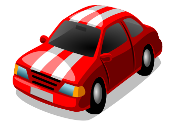

What Is SVG?
SVG is an XML-based, two-dimensional image format with support for interactivity and animation
SVG is a markup language similar to HTML but is designed for another purpose: rendering shapes and images
Since it is vector based, it can be scaled up and down maintaining the spatial relationships between the shapes.
And without loosing quality.
Since it is markup, it allows us to style or interact with the indivual elements that compose an SVG
Basic SVG features have good browser support.
But UC Browser does not support masks at all...
Looks nice, let's use it everywhere!
Nope. It depends
- SVG is better suited for vector-based illustrations like icons, logos...
- It also depends on the nature of the illustration. A complex svg can be bigger than its png version.
SVG ~2.9MB vs. PNG ~253 kB
...But if you need to create a high resolution version of it perhaps it worths it.
And SVG's can be gzipped also...
Each individual case is different. Test and compare.
Working with SVGs
{kind=link}
SVG Coordinate System
SVG Canvas
Area where the SVG content is drawn.
It is a concept: infinite in both dimensions. Can be any size
It is rendered on the screen relative to a finite region: the viewport
The viewport
Sort of a window through which you see a particular scene
We could see the whole scene, or a portion of it.
It is defined with specific dimensions.
The viewport
We can set the dimension with or without a unit identifier:
- em, px, %....
- user units
Once this dimensions are set, the browser stablishes two coordinate systems
The viewport coordinate system
It has its origin set at the top left corner of the viewport.
It is similar to the coordinate system established on an HTML element using the CSS box model.
The user coordinate system
Coordinate system established on the SVG canvas.
Initially identical to the viewport coordinate system.
It can be modified using the viewBox attribute
The viewBox
Coordinate system used to draw the SVG content onto the canvas.
Can be smaller or bigger than the viewport.
It can be fully or partially visible inside the viewport too.
The viewBox
It takes four parameters:
- min-x and min-y: determine the upper left corner of the viewbox.
- width and height. Only positive values.
The viewBox: some examples
By altering the viewBox properties we can scale or crop it
Aspect Ratio
So far, we have altered the viewBox but taking care of keeping the aspect ratio of the viewport.
But if we don't keep it...
preserveAspectRatio syntax
- align: force uniform scaling and define an alignment method to fit the viewBox inside the viewport. In previous example we set it to "none"
- meetOrSlice: specify if the entire viewbox should be visible inside the new viewport
preserveAspectRatio: examples meet
Scale the graphic as much as possible, the entire viewBox fits inside the viewport.
preserveAspectRatio: examples slice
Scale the graphic enough to cover the viewport area. Part of the viewbox is sliced
Graphical Elements
Ellipse
Round Rect
Line
Polyline
Polygon
Path
Path
Path Data attribute
- moveto = M. Starting point of the path
- lineto = L
- Arcs, cubic and quadratic beziers
- closepath = Z
Text
Use
Container Elements
Defs
Contains items defined for later reuse
g
Used to group items together
Gradients
- Not rendered on their own. Defined in the defs section.
- Id attribute is required.
- Used by other elements to define their fill or stroke attributes
Linear Gradient
Radial Gradient
Require a circle to be defined. cx, cy, r define this circle
A focus can also be defined using fx , fy
Embedding SVGs
It can be embedded in a document in different ways, each of which has prons and cons
- as an image, using the img tag

- as background image in CSS
.el {background-image: url(mySVG.svg);} - as an object
- as an iframe
Embedding SVGs
- using the embed tag
- inline
Embedding SVGs
The recommended way is using the object tag
- It provides a fallback mechanism
- Allows CSS styling and Javascript manipulation
- Prevents polluting the document with svg code
Embedding SVGs
The simplest way is using the svg inline
- You can target it directly from any CSS file.
- But it adds to the page size. Inline SVGs cannot be cached
- Does not provide a fallback mechanism. IE8 does not support it.
Embedding SVGs
CSS background and img are treated in a similar way
- Does not preserve styles or animations applied in an external CSS resource
- Loose ability to respond to CSS interactions (e.g. :hover)
Responsive SVGs
The most important thing to keep in mind is to remove width and height from the root svg element.
The viewBox attribute must be preserved.
Also preserveAspectRatio must be set to xMidYMid meet, but this is the default.
To achieve a consistent responsive behavior we need to deal with quite a lot of browser inconsistencies and bugs
Mostly, because how browser determine the dimensions of an SVG differ.
SVG Animation with CSS
Separation of concerns?
The line between HTML and CSS is clear.
SVG blurs this line.
Presentation attributes
- Shorthand for setting a CSS property on an element
- E.g. fill, stroke, stroke-width
Presentation attributes
We can use a subset of CSS properties to style SVG elements.
- Some of these attributes are shared with CSS, like opacity or transform
- Others are specific: fill, stroke, stroke-width
- SVG 2 will add others like: x, y, width
Presentation attributes
We can also set this attributes inline or in a style tag.
The style tag can be placed inside the svg tag or outside it (e.g in the head of the document)
And you can link to an external style sheet from the SVG file.
Selectors
Most CSS selectors can be used to target SVG elements: type, class and ID
And also pseudo-classes like :hover or :first-child
Animation
Using CSS keyframes and animation properties.
Using CSS transitions.
Animating Paths
SVG Animation using Snap.svg
Snap.svg
- Javascript library for working with SVG
- By the author of Raphaël library - Dimitry Baranovsky
- Rewritten to support more modern browsers (IE9 and up) and features like:
- masking
- clipping
- patterns
- groups
- It allows to work with existing or generated svgs
Snap.svg
- Open Source: released under an Apache 2 license.
- Minified version ~76 kB
- Decent documentation, but lacks of examples
- Supported by Adobe
<g>
- SVG group element. It is not the only way of grouping elements
- Similiar to a layer in a graphics editor.
- Or a container in Easeljs.
<linearGradient>
- Creates a linear gradient
- Other elements can use it (e.g. to define fill attribute), referencing it by its id
- It is defined by two or more <stop> elements, that define the colors and its offset (where the color starts)
Slides
Not a coder? Not a problem. There's a fully-featured visual editor for authoring these, try it out at http://slides.com.
Point of View
Press ESC to enter the slide overview.
Hold down alt and click on any element to zoom in on it using zoom.js. Alt + click anywhere to zoom back out.
Touch Optimized
Presentations look great on touch devices, like mobile phones and tablets. Simply swipe through your slides.
Fragments
Hit the next arrow...
... to step through ...
... a fragmented slide.
Fragment Styles
There's different types of fragments, like:
grow
shrink
fade-out
current-visible
highlight-red
highlight-blue
Transition Styles
You can select from different transitions, like:
None -
Fade -
Slide -
Convex -
Concave -
Zoom
Themes
reveal.js comes with a few themes built in:
Black (default) -
White -
League -
Sky -
Beige -
Simple
Serif -
Blood -
Night -
Moon -
Solarized
Slide Backgrounds
Set data-background="#dddddd" on a slide to change the background color. All CSS color formats are supported.
Image Backgrounds
<section data-background="image.png">Tiled Backgrounds
<section data-background="image.png" data-background-repeat="repeat" data-background-size="100px">Video Backgrounds
<section data-background-video="video.mp4,video.webm">... and GIFs!
Background Transitions
Different background transitions are available via the backgroundTransition option. This one's called "zoom".
Reveal.configure({ backgroundTransition: 'zoom' })Background Transitions
You can override background transitions per-slide.
<section data-background-transition="zoom">Pretty Code
function linkify( selector ) {
if( supports3DTransforms ) {
var nodes = document.querySelectorAll( selector );
for( var i = 0, len = nodes.length; i < len; i++ ) {
var node = nodes[i];
if( !node.className ) {
node.className += ' roll';
}
}
}
}
Code syntax highlighting courtesy of highlight.js.
Marvelous List
- No order here
- Or here
- Or here
- Or here
Fantastic Ordered List
- One is smaller than...
- Two is smaller than...
- Three!
Tabular Tables
| Item | Value | Quantity |
|---|---|---|
| Apples | $1 | 7 |
| Lemonade | $2 | 18 |
| Bread | $3 | 2 |
Clever Quotes
These guys come in two forms, inline:
“The nice thing about standards is that there are so many to choose from”
and block:
“For years there has been a theory that millions of monkeys typing at random on millions of typewriters would reproduce the entire works of Shakespeare. The Internet has proven this theory to be untrue.”
Intergalactic Interconnections
You can link between slides internally, like this.
Speaker View
There's a speaker view. It includes a timer, preview of the upcoming slide as well as your speaker notes.
Press the S key to try it out.
Export to PDF
Presentations can be exported to PDF, here's an example:
Global State
Set data-state="something" on a slide and "something"
will be added as a class to the document element when the slide is open. This lets you
apply broader style changes, like switching the page background.
State Events
Additionally custom events can be triggered on a per slide basis by binding to the data-state name.
Reveal.addEventListener( 'customevent', function() {
console.log( '"customevent" has fired' );
} );
Take a Moment
Press B or . on your keyboard to pause the presentation. This is helpful when you're on stage and want to take distracting slides off the screen.
Much more
- Right-to-left support
- Extensive JavaScript API
- Auto-progression
- Parallax backgrounds
- Custom keyboard bindings